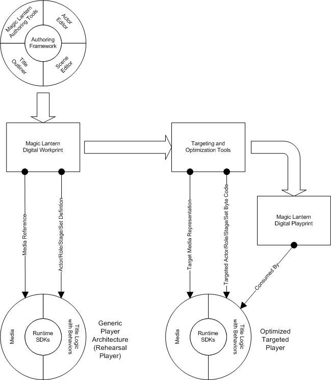

Welcome to the Magic Lantern Android Studio. This tool may be used to create applications for Android devices using the Wizzer Works Magic Lantern platform. Magic Lantern is a interactive, title development platform for authoring highly interactive titles, such as interactive TV applications, games, educational programs, and point-of-information/sales kiosks. It was created specifically for the real-world needs of professional title development teams as they break new ground in the development of real-time interactive titles.
The Magic Lantern authoring system was developed with an understanding of how the top professional development teams are currently creating titles. It is designed to streamline development and collaborative processes so that title developers can focus on enhancing content, performance and interactivity. The Magic Lantern development environment is being developed for the Windows and UNIX workstation; for title playback, the Magic Lantern architecture facilitates efficient deployment of a title to one or more platforms, such as an interactive TV set-top box, a Pentium-based PC, or game console.
Magic Lantern is an Open Source project that can be found on SourceForge. The project can be found at http://sourceforge.net/projects/wz-mle/. Downloads can currently be obtained for the Windows XP platform.
The Magic Lantern architecture establishes a complete foundation for developing high-performance interactive titles without restricting developers' ability to customize title elements or processes. Its object-oriented design and extensible tools framework encourages the incorporation of specialized add-ons and title templates.
The Magic Lantern Authoring System includes the following components:
Figure 1.1.1 shows the relationship between these components.

Figure 1.1.1: Magic Lantern Authoring System Components
The Magic Lantern Authoring Tools include the Scene Editor, the Rehearsal Player, the Title Outliner, and the Actor Editor. These tools comprise the title development interface for the entire development team, including programmers, title designers and graphic artists. They allow title artists and designers to view, tune, and change the title and the title elements without an extensive knowledge of the underlying software. Changes that are made with the tools can be saved directly to a Digital Workprint (DWP), the Magic Lantern title specification file format, without compiling.
The Magic Lantern Authoring Framework provides a layered architecture for the Magic Lantern authoring tools and facilitates the creation of additional custom windows and commands for the tools. Third-party tool providers can incorporate specialized tools into the framework without needing a deep understanding of the Magic Lantern software. The Magic Lantern Authoring Framework provides an interface to the DWP, the Rehearsal Player, and the Magic Lantern core libraries.
The DWP is the Magic Lantern title specification file format that facilitates title deployment to multiple platforms. The DWP specifies all the resources that accompany a title and is a repository for saved information about the development of a title. The DWP is designed to be an open standard and will eventually be based on XML technology that can be extended by title developers and third-party developers.
Magic Lantern includes C++ and Java classes and runtime libraries for a variety of target platforms. These SDKs provide routines for I/O, audio, graphics rendering, 2D and 3D objects, applying kinematics, and math. In addition, behavioral libraries are included for designing title element behaviors
The title targeting tools transform the DWP and associated code resources into its executable version for a specific target platform. They include tools for controlling the targeting process, media translation, color management, and title compilation. The platform representation of the DWP and the title assets is known as the Digital Playprint.
The Magic Lantern title development process supports content integration, rapid development and prototyping, title layout and tuning, debugging, targeting and optimization. More information can be found here, "Title Development Process".
"Introduction to Magic Lantern Concepts" explains the basic concepts in developing an interactive title with Magic Lantern.